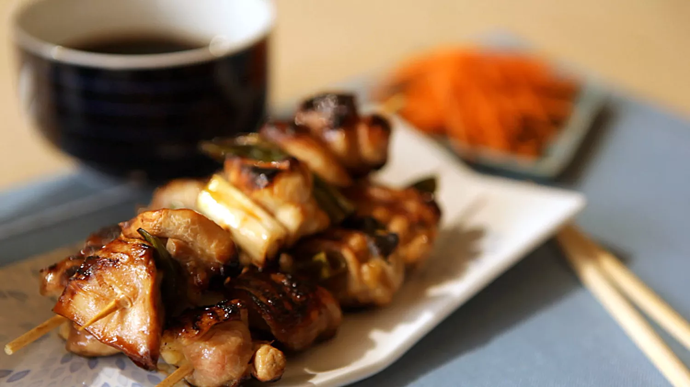

Chicken Yakitori

Description
Chicken yakitori is an easy Japanese dish to make at home. Serve with white rice and sake for an easy but special meal!
- Prep Time: 10 mins
- Cook Time: 15 mins
- Additionnal Time: 15 mins
- Total Time: 40 mins
- Servings: 4
- Yield: 4 servings
Ingredients
- 10 wooden skewer
- 4 skinless, boneless chicken thighs, cut into 1-inch cubes
- 4 scallions, sliced into 1-inch pieces
- ½ cup sake
- ½ cup soy sauce
- 3 tablespoons mirin
- 2 tablespoons white sugar
- 1 teaspoon vegetable oil, or to taste
Directions
- Soak 10 wooden skewers in cold water for 15 minutes.
- Thread chicken pieces onto the soaked skewers, alternating with scallions.
- Combine sake, soy sauce, mirin, and sugar in a small saucepan and bring to a boil. Reduce heat and simmer for 5 minutes. Reserve 1/2 of the sauce for dipping.
- Heat a grill pan over high heat and lightly brush with vegetable oil. Add skewers and cook until chicken is no longer pink in the center, basting frequently with 1/2 of the sauce, 7 to 10 minutes per side.
ITADAKIMASU !
Source: https://www.allrecipes.com/recipe/263690/easy-chicken-yakitori/
Back to main page